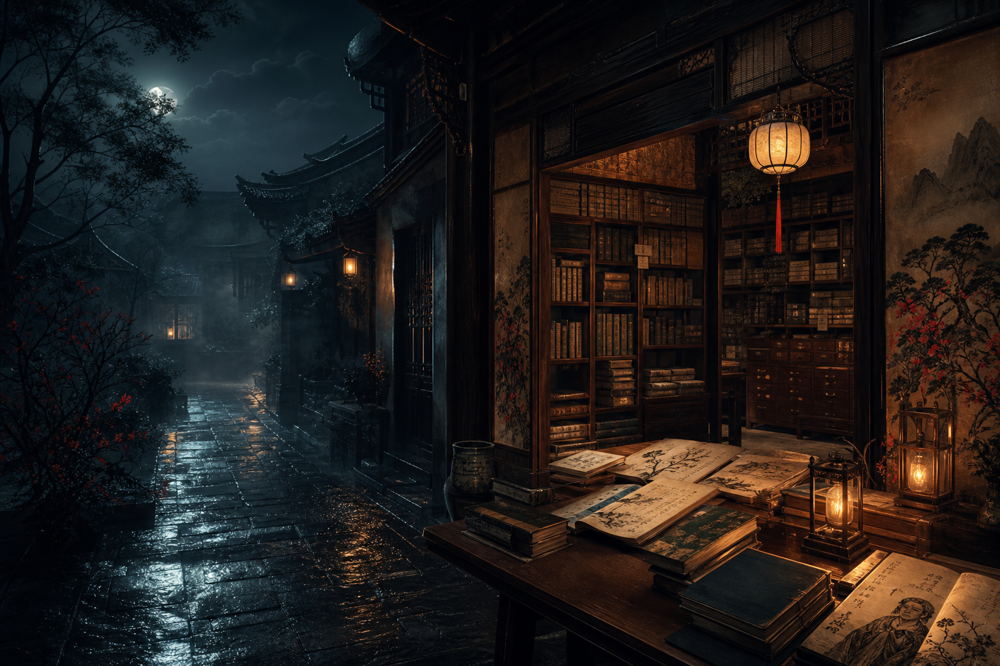

故事星图
按人物、器物、地点和情绪串联篇目，让读者从一个夜谈自然走向另一个夜谈。

按人物、器物、地点和情绪串联篇目，让读者从一个夜谈自然走向另一个夜谈。
出处、年代、作者和处理方式藏在每篇旁栏里，读得顺，也查得到。
长文用高对比正文、进度条和安静动效服务阅读，而不是抢走故事本身。
从婴宁、聂小倩到青凤、香玉，看古典志怪如何书写女性、异类、秩序和选择。
席方平、陆判、考城隍放在一起读，能看见古人如何把现实制度投影到幽冥世界。
不是每个夜谈都要吓人。王六郎、香玉、种梨、山市和韩凭夫妇保留了古典志怪的温厚与空灵。
崂山道士、促织、罗刹海市、江城等篇目，写的都是人间欲望在异闻中变形。
剑、心、皮相与奇术把不可见的欲望和冤屈变成可见之物。
夜行、荒寺、旧宅、仙山和陌生人，是深夜故事最稳定的入口场景。
一个看似轻巧的求仙故事，真正讽刺的是只想要奇迹、不愿意修行的人。
《婴宁》的明亮并不浅。笑声背后，是一个女性角色如何在礼法和天真之间保持自我。
这是一篇比鬼故事更锋利的冤案故事。阴间并不天然公正，人只能带着痛苦继续上诉。
《山市》把奇观写得清爽又空灵。它不是鬼魅故事，而是一篇关于观看、幻象和消失的短札。
从《聊斋志异》的经典篇目出发，读一个关于欲望、伪装和识人迟疑的夜谈。
这不是简单的女鬼故事，而是一篇关于克制、信任和重新成为人的故事。
《聊斋志异》里温柔的一类异闻：鬼魂不一定只代表恐惧，也可能代表旧情与未完的义气。
一个怪诞故事背后的问题很现代：外貌、才情和命运，究竟哪一个构成自我？
一则魏晋志怪传统中的机智故事：恐惧被拆开以后，鬼也会露出笨拙的一面。
不是所有夜谈都要吓人。这个故事更像一场街头幻术，也像一则关于吝惜与惊奇的寓言。
《青凤》有狐女、旧宅和幽会，却不只是艳遇。它真正写的是身份暴露以后，情意如何经受家族和恐惧的拉扯。
《香玉》把花写成有情之物。它的奇异不是惊吓，而是草木、记忆和承诺之间的温柔牵连。
《促织》不是昆虫奇谈，而是一篇层层下压的世情故事。小小蟋蟀背后，是役使、恐惧和家庭命运。
一个关于审美秩序反转的故事。到了罗刹国，美丑不再可靠，读书人也必须重新面对自我。
《考城隍》把科举焦虑推到阴间。死后仍要应试，这个设定荒诞，却很懂读书人的命运感。
《江城》表面写悍妻，深处却牵出婚姻权力、性情改造和家庭秩序的复杂问题。
《干将莫邪》来自古代志怪与传说系统。它写名剑，也写被权力吞没后仍要传下去的复仇记忆。
韩凭夫妇的故事把爱情、权力和死亡写成传说。双冢与相思树让私人悲剧获得了民间记忆。
围绕聂小倩、婴宁、陆判、席方平等人物建立索引页，补人物关系、选择节点和改编避坑说明。
收集夜行、寄宿、荒寺、废宅相关篇目，让站点形成可连续浏览的场景主题。
用《种梨》《山市》《崂山道士》等轻奇观篇目平衡站点气质，避免内容只剩惊悚。
解释公版、底本、异文、Wikisource、Project Gutenberg 等来源问题，提高站点可信度。